Each atlas is shown as its complete unchanged source. Separate per-cell written reviews for its eight authored states remain a further coverage task; the whole-sheet grade is not a pass for each state or for motion.
D2X-0012 · 4.5/5

Rounded lavender stone, cream arches and a readable shell window fit the painted world. The lamp is very bright and the shelf gathers several small glossy accents.
Refinement: Reuse the architecture; review lamp emphasis and small shelf decorations with the child and active cards in the actual room.
assets/flats/castle/interactions_v4/background_tiles/room_kitchen_background_r0_c0.png · 1024×768Exact source hash and aliases
3c05ca73febc3baa99c40150b48764177223280b8647fb9d01fc4d9e669ad38bD2X-0012, D1V2-0119
D2X-0013 · 4.6/5
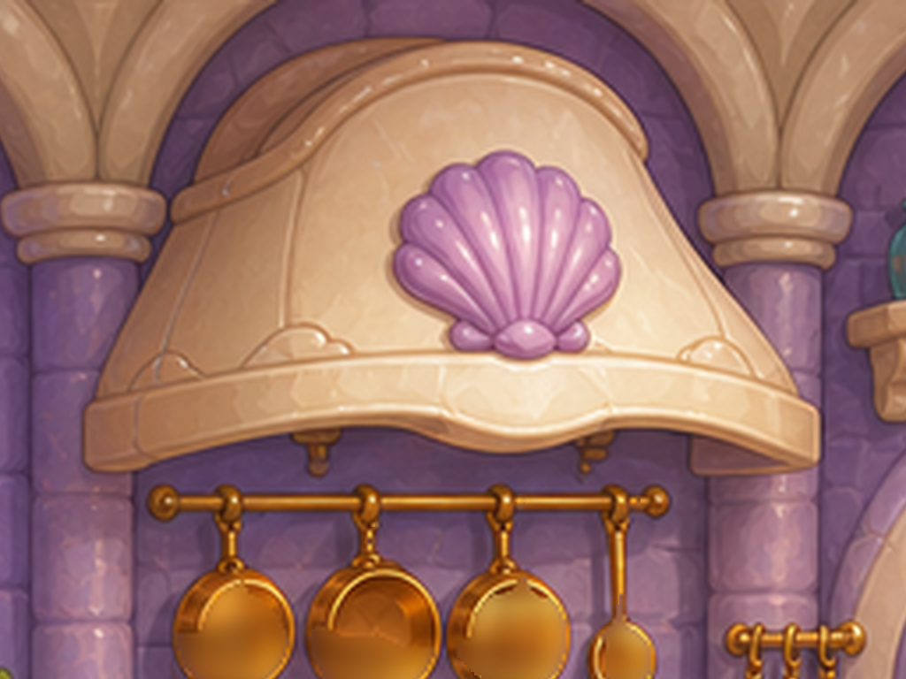
The broad cream hood and oversized shell crest have coherent painted bands and a clear toy silhouette; the quiet lower wall leaves useful figure contrast.
Refinement: Reuse the same source. Preserve the hood and shell across the joined master; no novelty redraw.
assets/flats/castle/interactions_v4/background_tiles/room_kitchen_background_r0_c1.png · 1024×768Exact source hash and aliases
059e9d72f1329fe1259479d4c068a64fcd9d6afc109502f50779c99abcbac827D2X-0013, D1V2-0120
D2X-0014 · 4.5/5
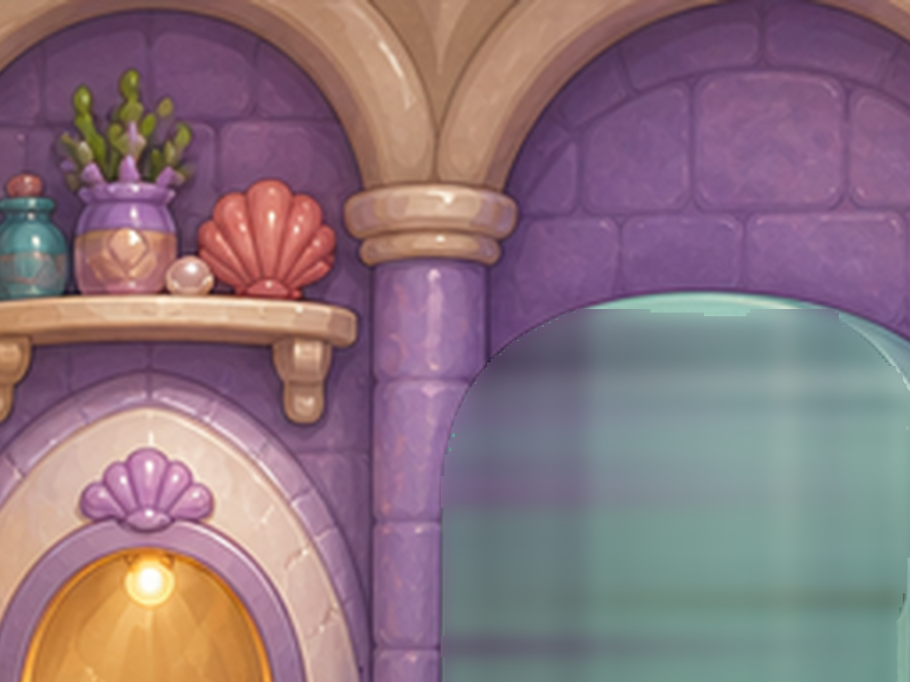
The large column is readable, with consistent lavender bands. The shelf cluster and warm oven crown add detail and bright accents close together.
Refinement: Check the native oven card ownership and shelf hierarchy in the real room; retain shared architecture and avoid repainting split objects tile by tile.
assets/flats/castle/interactions_v4/background_tiles/room_kitchen_background_r0_c2.png · 1024×768Exact source hash and aliases
757c89aaf143d61d4d1e17f4f7c53ac23a2bc7c0fbf36c5bcd980568e1f7fb67D2X-0014, D1V2-0121
D2X-0015 · 4.5/5
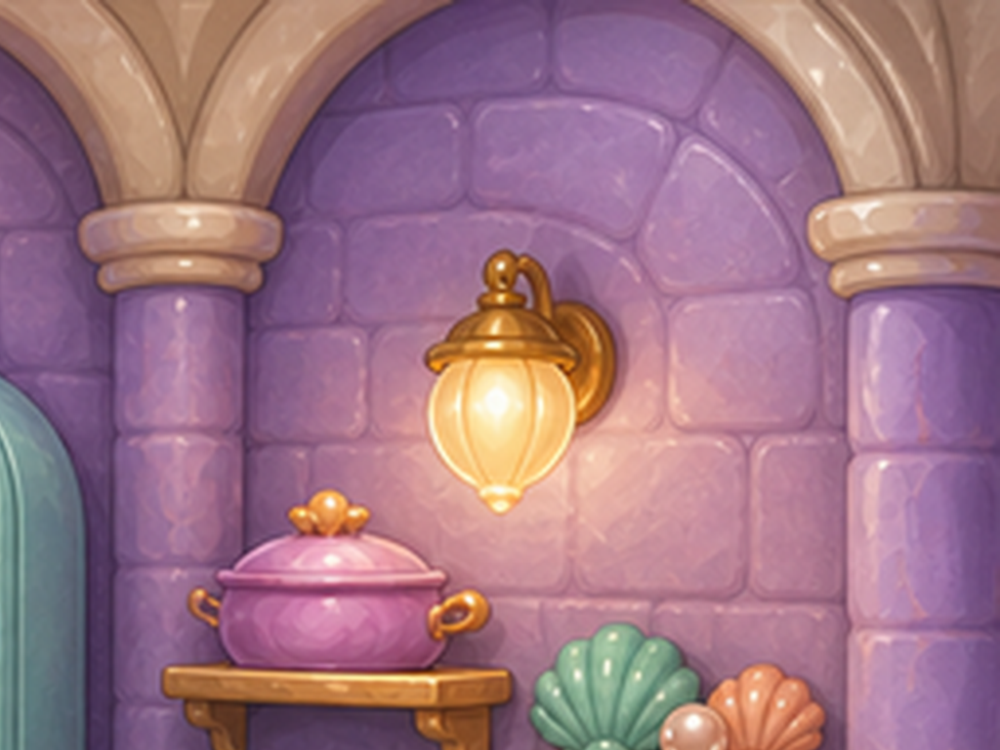
Rounded purple cooking pot, gold sconce and cream arches are coherent. Two warm highlights and shell clutter compete for attention within this crop.
Refinement: Review the lamp/pot emphasis at mounted size; reuse the painted shapes and resolve any live-card duplication from actual ownership evidence.
assets/flats/castle/interactions_v4/background_tiles/room_kitchen_background_r0_c3.png · 1024×768Exact source hash and aliases
48dc74dc14c228cc68da4e512fe01a80726c614429c429bc14bffe74315e7123D2X-0015, D1V2-0122
D2X-0016 · 4.6/5
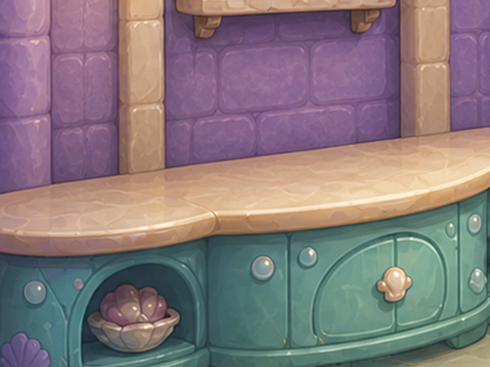
The large teal cabinet and broad cream worktop read clearly, with useful pale value bands and rounded shell handles. There is space for action above the counter.
Refinement: Reuse. Evaluate any worktop props as separately owned live cards, with current child/actor scale.
assets/flats/castle/interactions_v4/background_tiles/room_kitchen_background_r1_c0.png · 1024×768Exact source hash and aliases
46fa2db95b39365ed42e99dcc9defb9a775e7653f3e1027a6fc22e5d4139ba1fD2X-0016, D1V2-0123
D2X-0017 · 4.6/5
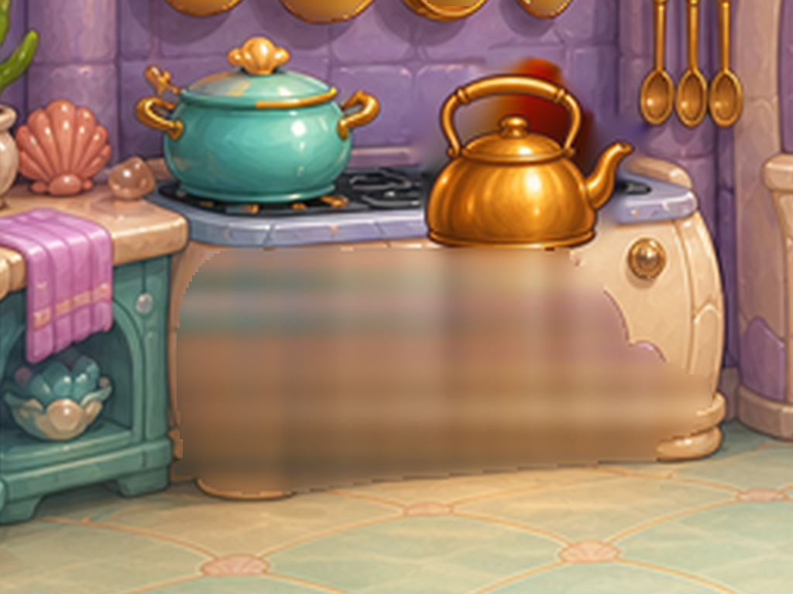
Quiet lavender wall and mint floor provide strong separation; the cabinet terminates naturally with the next tile. Broad material bands are restrained.
Refinement: Reuse the unchanged pixels; preserve the complete counter and floor joins.
assets/flats/castle/interactions_v4/background_tiles/room_kitchen_background_r1_c1.png · 1024×768Exact source hash and aliases
8a49cc80a4a0fcc78979056329398cd35a52ed9f42c912af2d21140a171f299cD2X-0017, D1V2-0124
D2X-0018 · 4.5/5
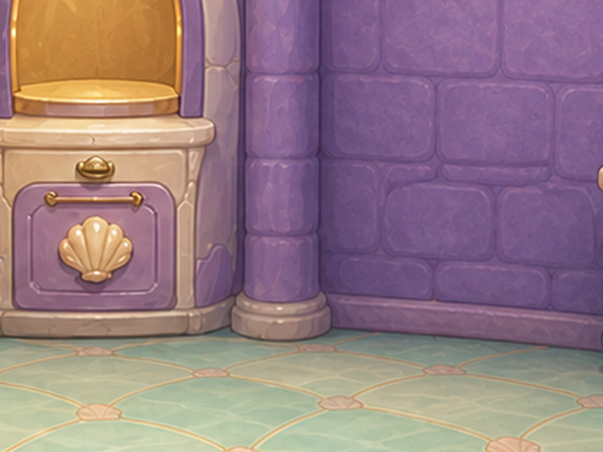
The oven has a clear rounded door, cream housing and shell emblem. Its baked presentation is attractive, but this source alone cannot prove correct interaction-card ownership.
Refinement: Trace and capture the working oven over this background before claiming ownership/contact acceptance; preserve the painted design.
assets/flats/castle/interactions_v4/background_tiles/room_kitchen_background_r1_c2.png · 1024×768Exact source hash and aliases
a47facda2e46320ec49959764a95f8385008f807e204a8119d41e455d3cf5f31D2X-0018, D1V2-0125
D2X-0019 · 4.4/5
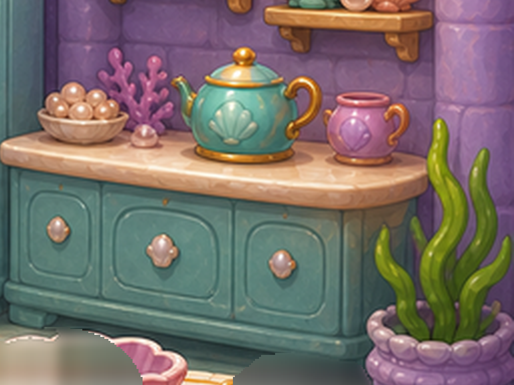
The kettle, mug, pearl bowl, coral and seaweed create a dense right-side cluster with many glossy accents. It is much more detailed than the quiet central work area.
Refinement: Priority: simplify this local decorative cluster or isolate the intended live prop after inspecting actual room scale; reuse the stronger kettle/cabinet painting before any redesign.
assets/flats/castle/interactions_v4/background_tiles/room_kitchen_background_r1_c3.png · 1024×768Exact source hash and aliases
1da2cb9587a227f9351b0a456ad9fc6baa3a364cc6b7c26e1c28c3d018a8b724D2X-0019, D1V2-0126
D2X-0020 · 4.6/5
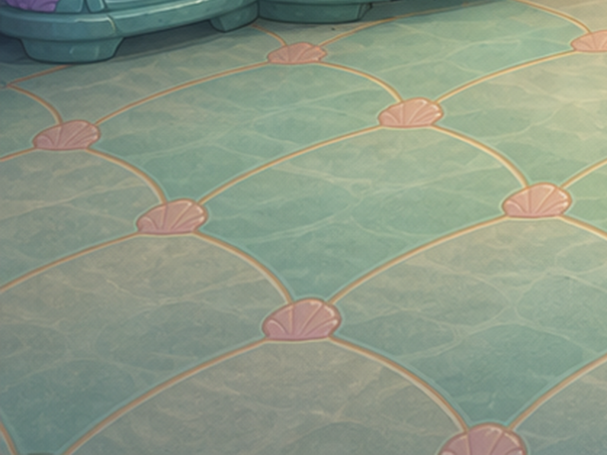
Mint floor, broad curved grout and soft shell motifs remain low contrast. Cabinet feet and floor contact are coherent with the row above.
Refinement: Reuse the continuous floor. Do not add an independent camera or tile-specific lighting repair.
assets/flats/castle/interactions_v4/background_tiles/room_kitchen_background_r2_c0.png · 1024×768Exact source hash and aliases
e9af86a19c5ef9044ff3d11246040f254513a71f9d1c8b176c613cd6021a1b6bD2X-0020, D1V2-0127
D2X-0021 · 4.6/5
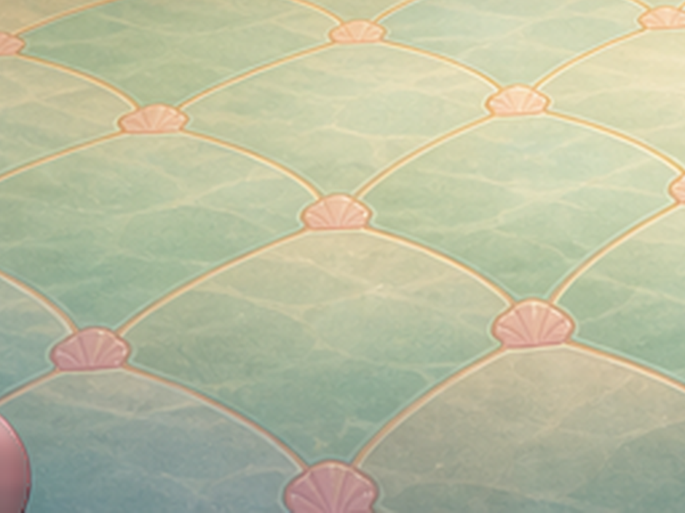
The quiet aqua floor and broad shell arcs support child-readable foreground contrast without fine realistic grain.
Refinement: Reuse exactly; keep the master floor motif continuous.
assets/flats/castle/interactions_v4/background_tiles/room_kitchen_background_r2_c1.png · 1024×768Exact source hash and aliases
4e390845f8d5a3db4c5a937caa5de1ffb60c0347d2fbf340b9a189509fc13ef8D2X-0021, D1V2-0128
D2X-0022 · 4.6/5
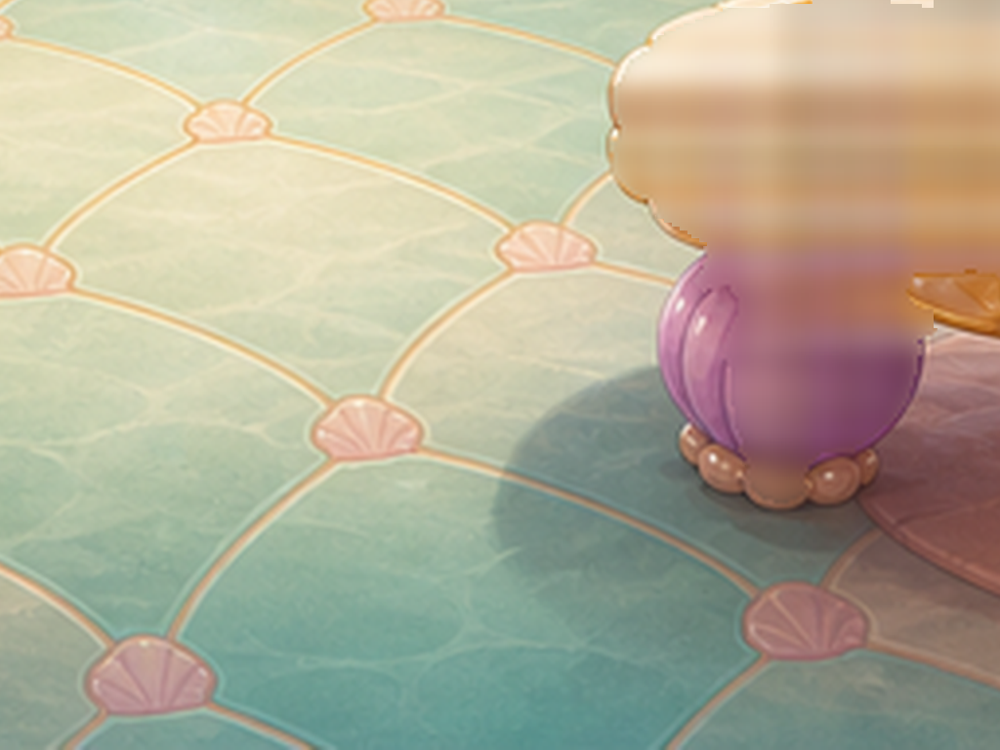
The pale floor light remains a broad painted band rather than sharp specular glare; shell spacing is coherent and restrained.
Refinement: Reuse; check current actor/contact shadows separately.
assets/flats/castle/interactions_v4/background_tiles/room_kitchen_background_r2_c2.png · 1024×768Exact source hash and aliases
6c12ef5153102152f7582da654a09cac438d2c50bd0667bae56d2b59511e5cc4D2X-0022, D1V2-0129
D2X-0023 · 4.5/5

Floor is coherent and low contrast. The large pot fragment at the top is a intentional continuation of the adjacent painting, but it adds a strong right-edge mass.
Refinement: Review the complete plant/occlusion at mounted scale; retain its single identity across the adjacent tile.
assets/flats/castle/interactions_v4/background_tiles/room_kitchen_background_r2_c3.png · 1024×768Exact source hash and aliases
0b9a5f3a00979db39da7caf8d8613d9b9bce340f274ef78ab29ca924c5b6dc5eD2X-0023, D1V2-0130
D2X-0032 · 4.5/5
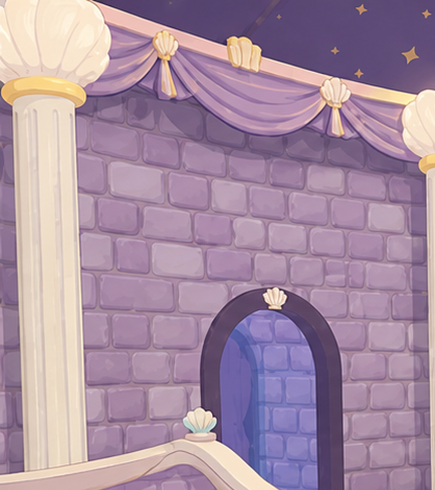
Cream shell column, lavender drapery and blue doorway form a coherent soft painted frame. Small brick/cloth details are finer than the large doorway cue.
Refinement: Reuse architecture; check the complete source joins and live invitation scale.
assets/flats/castle/interactions_v4/background_tiles/room_opera_hall_background_r0_c0.png · 910×1024Exact source hash and aliases
a18cd59488570b1d5316f5583d7dee778e2dd5395b5aeeff0ef92967a76ed0a4D2X-0032, D1V2-0147
D2X-0033 · 4.5/5
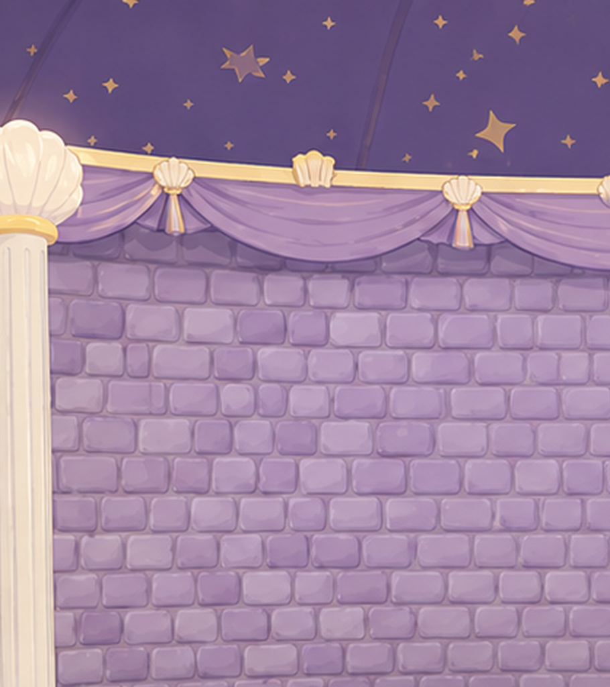
Quiet central wall leaves useful space for the owned performance cards. The small stars and repeated brick pattern slightly weaken the broad-value treatment.
Refinement: Retain quiet staging; assess pattern contrast behind the actual performers rather than adding more decoration.
assets/flats/castle/interactions_v4/background_tiles/room_opera_hall_background_r0_c1.png · 910×1024Exact source hash and aliases
d6a48b9e9171f0f4aa1163e8925b9c57e77afca8567adefd4af9fb67af9cc1e3D2X-0033, D1V2-0148
D2X-0034 · 4.5/5
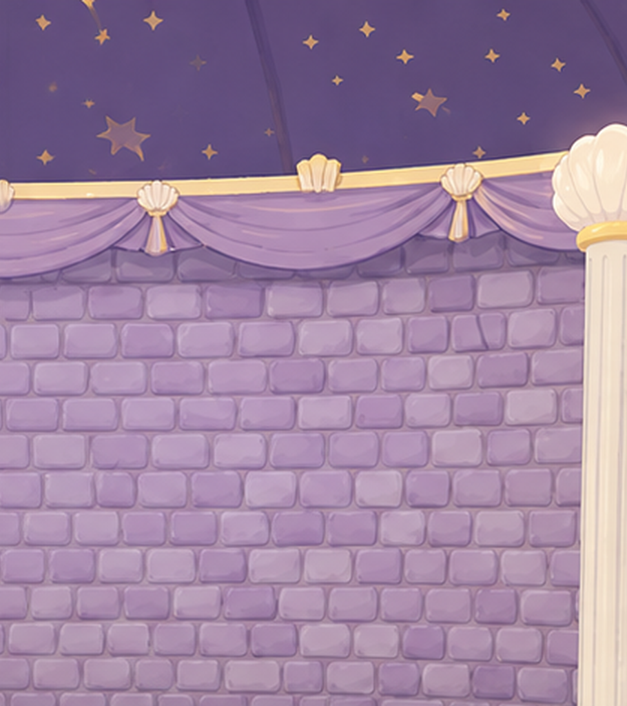
The center-right wall matches its sibling palette and keeps a readable shell-drapery band, with repeated small stars/brick detail.
Refinement: Reuse the joined wall and test actor/goal contrast in the actual stage.
assets/flats/castle/interactions_v4/background_tiles/room_opera_hall_background_r0_c2.png · 910×1024Exact source hash and aliases
63a66a417833a9764c5b6f4bc742b0c043e3cb99edd9616941dd53b8ab807773D2X-0034, D1V2-0149
D2X-0035 · 4.5/5
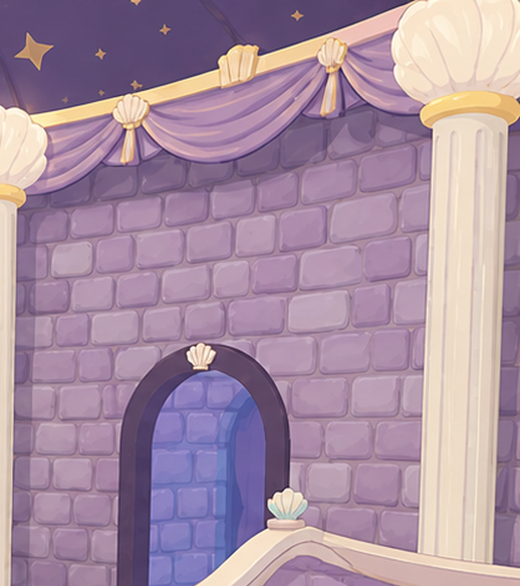
Doorway, rounded shell column and drapery mirror the opposite side coherently. The crop has no independently invented boundary object.
Refinement: Reuse the continuous painting and retain each doorway/column once.
assets/flats/castle/interactions_v4/background_tiles/room_opera_hall_background_r0_c3.png · 910×1024Exact source hash and aliases
642ab06337bb726b1fb736ffa10c6b94aadf01550ca1f12ba30421d6a0a4dd86D2X-0035, D1V2-0150
D2X-0036 · 4.1/5
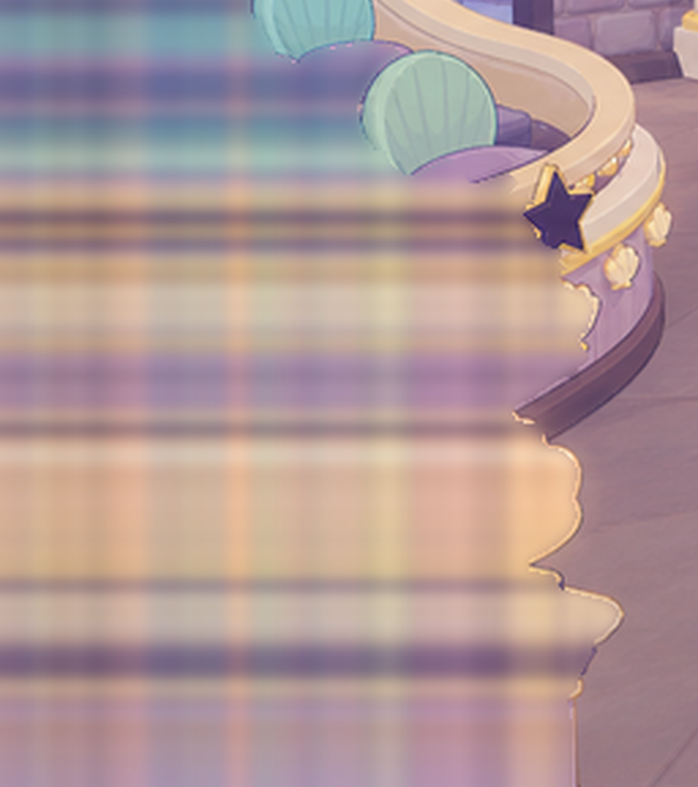
The balcony is readable, but a row of irregular pale patches interrupts the painted lavender fascia between shell emblems. These look like unfinished surface cleanup.
Refinement: Priority: locally repair the pale fascia remnants on the complete approved source, preserving the rail, shell emblems and boundary geometry.
assets/flats/castle/interactions_v4/background_tiles/room_opera_hall_background_r1_c0.png · 910×1024Exact source hash and aliases
422727d745628b237acba5135660f27d8989556abd19168f90bcec869d079a08D2X-0036, D1V2-0151
D2X-0037 · 4.5/5
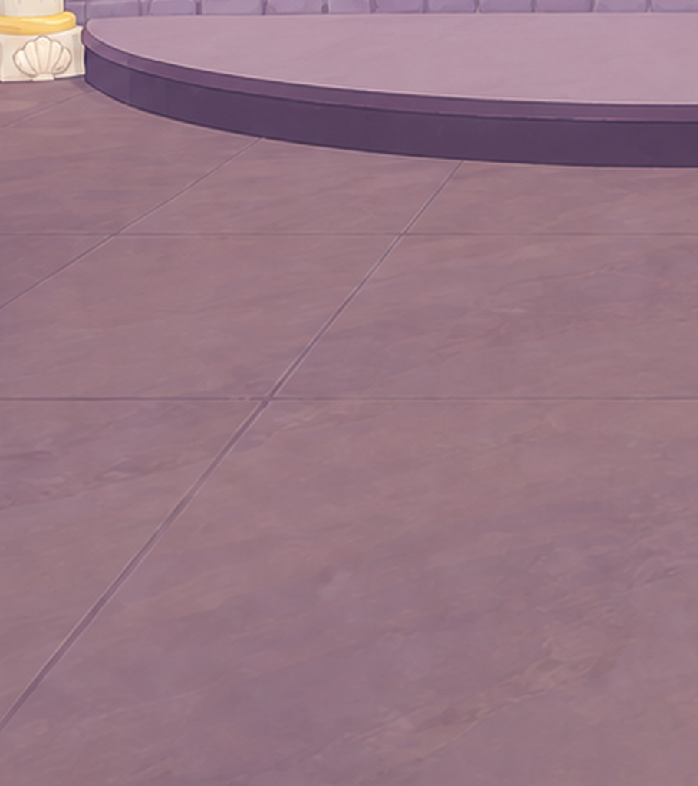
Broad lavender stage front and quiet purple floor provide space for the actor. The surface is restrained but slightly dull compared with the brighter career family.
Refinement: Review mounted actor contrast and stage contact; reuse until actual play demonstrates a material/readability gap.
assets/flats/castle/interactions_v4/background_tiles/room_opera_hall_background_r1_c1.png · 910×1024Exact source hash and aliases
1c75abdeb9b718c55d320b30fb6d5050bca09ff7e01a500156e567d9e9590004D2X-0037, D1V2-0152
D2X-0038 · 4.5/5

The same broad stage lip and low-detail floor carry through the center-right tile with a readable boundary.
Refinement: Reuse the continuous stage and verify current performer/support ownership separately.
assets/flats/castle/interactions_v4/background_tiles/room_opera_hall_background_r1_c2.png · 910×1024Exact source hash and aliases
bdc4d61551082d74e530eb39b46639904b7c372a39daec5255a038da44dc49dbD2X-0038, D1V2-0153
D2X-0039 · 4.1/5

The right balcony repeats the irregular pale fascia patches seen on the left; their sharp ragged edges spoil the otherwise soft shell/rail painting.
Refinement: Priority: repair the same named local cleanup gap with the whole joined-source identity and geometry preserved.
assets/flats/castle/interactions_v4/background_tiles/room_opera_hall_background_r1_c3.png · 910×1024Exact source hash and aliases
afb10ec7e107b1f2c1d0c6be9ab5244997401d12f41c589365a50d58e481215fD2X-0039, D1V2-0154
D2X-0040 · 4.0/5

Eight magic-book poses keep the pearl/shell support and useful cover/page stages, but cover mottling, thin grey contours and washed pages have less painted depth than the accepted career props.
Refinement: Reuse the same book identity and truthful page topology; improve broad painted bands and major contour contrast, then audit each authored turn in motion.
assets/flats/castle/interactions_v2/library_magic_book_sheet.png · 1024×1024Exact source hash and aliases
1d6710b704f3e124f2ea7c9765575a1fee1184f14b485829380b56696bf6f1b1D2X-0040
D2X-0041 · 3.9/5

The table is stable across eight poses, but its narrow grey outlines and largely uniform tabletop/pedestal bands feel flatter than the Kitchen family. Shell opening is readable in stills only.
Refinement: Keep the table base and shell identity; repaint with broad lavender/aqua value bands and stronger major contours, then check hinge/support contact.
assets/flats/castle/interactions_v2/library_pearl_table_sheet.png · 1024×1024Exact source hash and aliases
bd1ddc7018c7c7352849cd56278196f9dcaad755c5cef268a8572b42663cbf0dD2X-0041
D2X-0042 · 3.6/5

The pearl lamp is mostly grey with weak contrast. The pearl sinks below the shell rim instead of demonstrating an obvious lamp-state change; the final pink corona is a sharp uneven patch.
Refinement: Keep shell/pearl identity, improve painted color/contours, and specify a truthful light action. Do not equate pearl travel with accepted lighting or motion.
assets/flats/castle/interactions_v2/library_pearl_lamp_sheet.png · 1024×1024Exact source hash and aliases
6d39470c8e87cdef4555f2b7907bafb629590152c557f547f2a2a6bf2c446cabD2X-0042
D2X-0043 · 3.6/5

The stack has understandable books, but a ragged cyan background fragment remains behind every pose. Fine page lines, muted contours and the irregular leftover silhouette fail clean object isolation.
Refinement: Priority: remove only the non-book background remnant while preserving books/pearl, then improve broad painted material and audit opening page continuity.
assets/flats/castle/interactions_v2/library_book_stack_sheet.png · 1024×1024Exact source hash and aliases
ae9ca243c13e8552770c427ce644bb1832f2b904f4cf24d80bf535b2220813e5D2X-0043
D2X-0044 · 3.9/5

All eight small right-lamp states retain a dark open-rim notch and thin pale contours. The brightness changes are visible, but fine speckled edges and compact scale weaken the source.
Refinement: Preserve shell identity and support; repair rim/edge cleanup and use broad warm light/aqua shadow bands. Verify at actual mounted size.
assets/flats/castle/interactions_v4/sheets/library_pearl_lamp_right_sheet.png · 1024×512Exact source hash and aliases
6d58a6d9ebe496bacee4c8e0124a98712c03d8cb42f9b7744a30b3f0d708d30bD2X-0044
D2X-0045 · 4.0/5

The eight chandeliers have a coherent purple ring and hanging pearl, but the narrow ring, tiny lights and very fine isolated edges make the material feel sketchy.
Refinement: Reuse ring geometry; strengthen broad painted contours/material and check each light state at mounted size before motion acceptance.
assets/flats/castle/interactions_v4/sheets/library_ceiling_chandelier_sheet.png · 1024×512Exact source hash and aliases
09419955a5fbc087af145e60a3e7a3e5f36bf8949b65ceb8b6319489457b4f30D2X-0045
D2X-0046 · 3.0/5
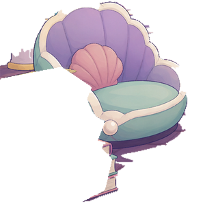
The left chair loses a large wedge through its left seat/back. Small jagged edge scraps remain; this is an incomplete furniture silhouette rather than a clean reusable full object.
Refinement: Priority: inspect foreground ownership, then restore the intended complete chair at a new derivative/source path without hiding Roshan behind broad background pixels.
assets/flats/castle/rooms/room_library_front_left.png · 300×303Exact source hash and aliases
342e3d76be18900429ea07acfd963872922ee2a56ef6ca995774e56cd9858e85D2X-0046, D1V2-0305
D2X-0047 · 2.9/5
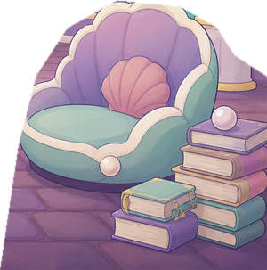
The right chair has a large missing upper-back wedge, a cut arm and ragged outer edge fragments; books remain but the chair silhouette is incomplete.
Refinement: Priority: restore the named missing chair portions with targeted ImageGen while retaining the established chair/books design and proper foreground ownership.
assets/flats/castle/rooms/room_library_front_right.png · 300×303Exact source hash and aliases
0c63a3eaf575bd627c3499bc612836e4276a0a4411fc1f623f2b637b9ff4738bD2X-0047, D1V2-0306
D2X-0064 · 3.8/5

The nook contains many tiny washed-out stuffie faces. Ear/face shapes vary between eight poses, and the thin outlines provide weak separation in a dense cluster.
Refinement: Preserve the accepted stuffie identities. Simplify broad value groups and define which toy actually moves; verify identities and motion individually.
assets/flats/castle/interactions_v2/playroom_stuffie_nook_sheet.png · 1024×586Exact source hash and aliases
bc8dde1a1cffcfd061f01f83d9c2549f3f7bca7d978e4df18ee651a8bee94574D2X-0064
D2X-0065 · 3.0/5

Eight stacking-toy states are dominated by flat uniform bands and a hard dark pointed peg. Ring lifts are legible, but the material does not match the stronger painted toy family.
Refinement: Priority: regenerate the same ring toy with broad painted bands, soft plum contours and a rounded toy peg. Preserve ring palette/order and base identity; audit ring conservation/contact before binding.
assets/flats/castle/interactions_v2/playroom_stacking_toy_sheet.png · 976×1004Exact source hash and aliases
30acc6f771d26039045310cac40dad36ccf660b9b3110cfaa1238f01d5a49e85D2X-0065
D2X-0066 · 4.3/5

The three colored blocks are rounded and readable, with visible painted faces; their thin contours and rough edges are weaker than the strong career props. Separation poses float without contact evidence.
Refinement: Reuse the three-block identity where possible; clean the edges and strengthen large value bands. Audit actual support/reassembly contact independently.
assets/flats/castle/interactions_v2/playroom_blocks_sheet.png · 1024×778Exact source hash and aliases
434b2a37678a51d319dc0ecfc9dcb2e5aee0a2753230004796716fa32e595106D2X-0066
D2X-0067 · 4.2/5

Eight tent states preserve the navy/cream tent shape and gradual closing aperture. Cloth reads as nearly uniform flat panels, while the small stuffies lose detail through the narrow opening.
Refinement: Keep the tent/toy identity; improve painted cloth bands and maintain truthful occlusion of the same toys as the flaps close.
assets/flats/castle/interactions_v2/playroom_play_tent_sheet.png · 1024×698Exact source hash and aliases
75c3135758dc001d330dc93819a17c7d670d32739c555eb84e7ed53904f6706aD2X-0067
D2X-0069 · 4.4/5
The friendly purple critter has readable large eyes and rounded painted masses. The detached curl to its right is ambiguous as a tail, trail or separate object.
Refinement: Review current hop/use to determine that curl ownership. Keep the approved friendly identity; do not count a source still as accepted hop motion.
assets/castle/dirty_cleanup_2d/critters/dust_bunnies/dust_bunny_hop.png · 512×512Exact source hash and aliases
677cda8c5de1d3aaf1d8960b089d48fab27106429bc221b4c26c14775b382752D2X-0069, D1V2-0037
D2X-0070 · 3.8/5

Eight sailboat poses are tiny, pale and edged with scattered fine pixels. Mast/sail orientation changes abruptly between the first and later cells.
Refinement: Preserve the boat identity and mast topology; clean edges and verify one physically continuous sail action at actual scale.
assets/flats/castle/interactions_v4/sheets/playroom_shelf_sailboat_sheet.png · 1024×512Exact source hash and aliases
759a5da53c1dc3ed494951a37803616e9ac2986e6d040486abc7873551575975D2X-0070
D2X-0071 · 3.9/5
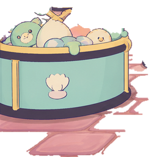
The left toy tub is readable, but upper toy/crown fragments and a pale floor strip remain at its edges. Large flat teal surfaces lack broad painted depth.
Refinement: Repair only unowned fragments and clarify the intended foreground silhouette; reuse the tub/stuffies and test occlusion in the actual room.
assets/flats/castle/rooms/room_playroom_front_left.png · 247×257Exact source hash and aliases
19f1482c9607236468d1a2d33468839bf0f1a654462fce018d96b010f2892b5fD2X-0071, D1V2-0319
D2X-0072 · 3.9/5
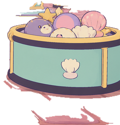
The right tub repeats coarse top/left fragments and a pale lower strip. Its stuffies overlap into a dense flat cluster with weak contour distinction.
Refinement: Priority cleanup of background remnants and individual toy silhouettes, retaining approved stuffie identity and sparse foreground ownership.
assets/flats/castle/rooms/room_playroom_front_right.png · 247×257Exact source hash and aliases
f16e7a2c02049c4b63de87b75fec7c5daa7d533d71a4a23e3acb89f07bd615e4D2X-0072, D1V2-0320
D2X-0074 · 4.3/5
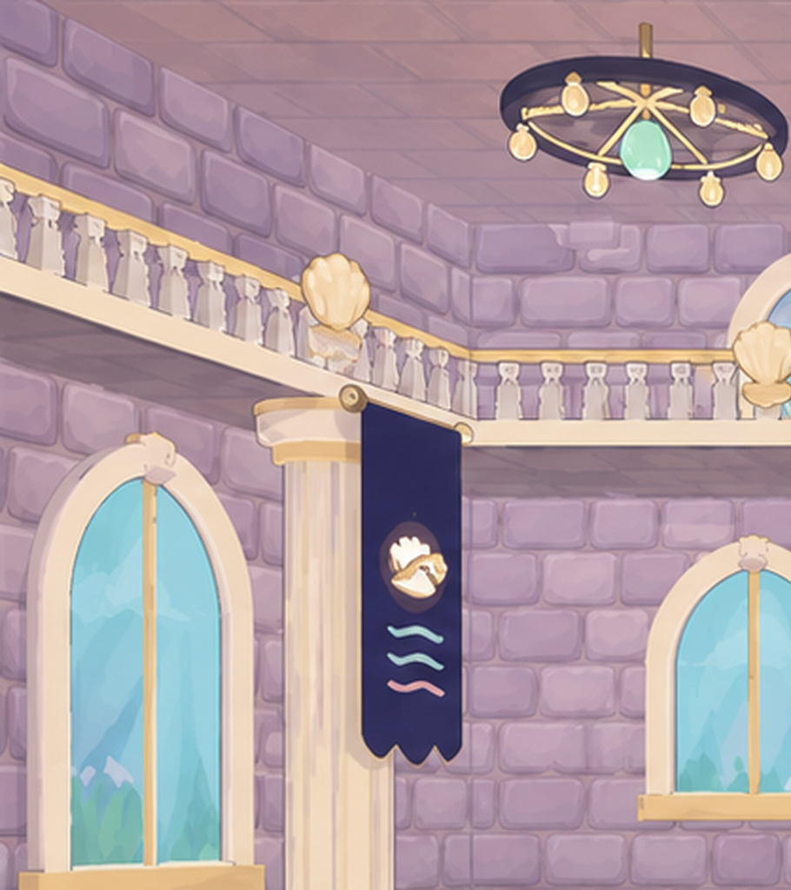
Soft lavender masonry and cream/aqua architecture preserve the toy-room identity, but tiny repeated balusters, fine chandelier lines and faint contours weaken the broad-form treatment.
Refinement: Reuse approved room geometry. Prioritize contour/detail contrast only where actual toy/actor mounting loses hierarchy; preserve boundary objects once.
assets/flats/castle/interactions_v4/background_tiles/room_playroom_background_r0_c0.png · 910×1024Exact source hash and aliases
096488900a40cbf648a1d14bc47a0c12b7fed6581b59f3ae64438df68083281dD2X-0074, D1V2-0155
D2X-0075 · 4.3/5

Soft lavender masonry and cream/aqua architecture preserve the toy-room identity, but tiny repeated balusters, fine chandelier lines and faint contours weaken the broad-form treatment.
Refinement: Reuse approved room geometry. Prioritize contour/detail contrast only where actual toy/actor mounting loses hierarchy; preserve boundary objects once.
assets/flats/castle/interactions_v4/background_tiles/room_playroom_background_r0_c1.png · 910×1024Exact source hash and aliases
6f4e4aba1b1088202e029c7789dd72ae3839973ad03188baba70bcf4dd04edeeD2X-0075, D1V2-0156
D2X-0076 · 4.3/5
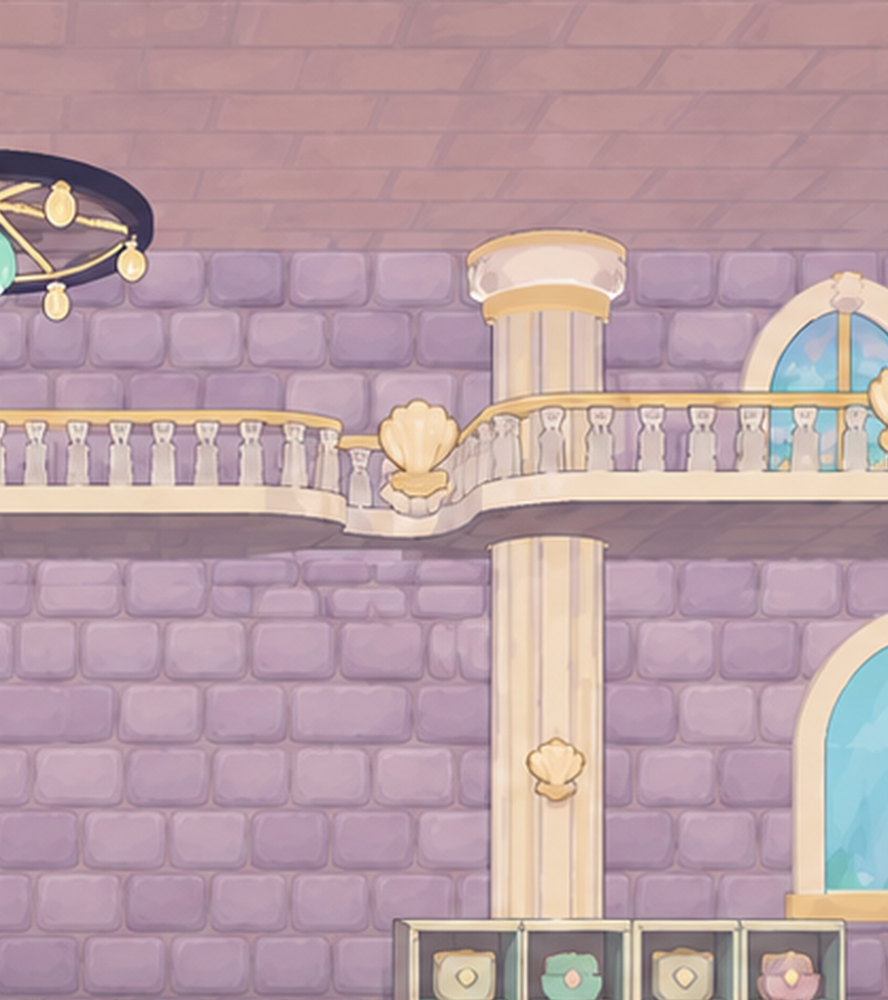
Soft lavender masonry and cream/aqua architecture preserve the toy-room identity, but tiny repeated balusters, fine chandelier lines and faint contours weaken the broad-form treatment.
Refinement: Reuse approved room geometry. Prioritize contour/detail contrast only where actual toy/actor mounting loses hierarchy; preserve boundary objects once.
assets/flats/castle/interactions_v4/background_tiles/room_playroom_background_r0_c2.png · 910×1024Exact source hash and aliases
6a53730b073147c28cf9d0592e8a671df9660a167e08e3522f8870caf585e05aD2X-0076, D1V2-0157
D2X-0077 · 4.3/5
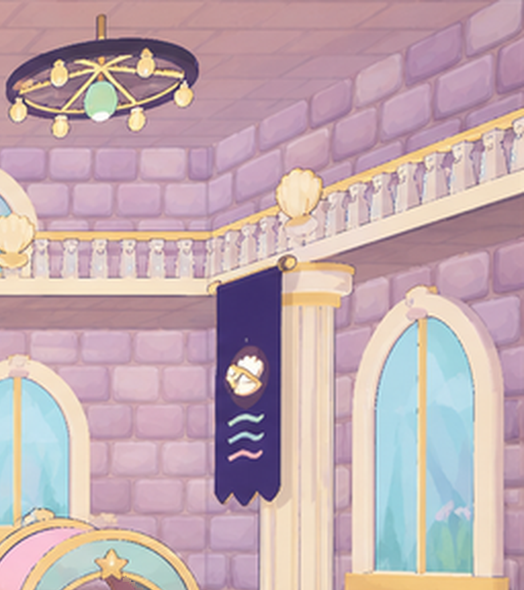
Soft lavender masonry and cream/aqua architecture preserve the toy-room identity, but tiny repeated balusters, fine chandelier lines and faint contours weaken the broad-form treatment.
Refinement: Reuse approved room geometry. Prioritize contour/detail contrast only where actual toy/actor mounting loses hierarchy; preserve boundary objects once.
assets/flats/castle/interactions_v4/background_tiles/room_playroom_background_r0_c3.png · 910×1024Exact source hash and aliases
843edda8aaa1167aa7f38b9ff0a7b3ce073e44137e8191f966b1dfa2b928268fD2X-0077, D1V2-0158
D2X-0078 · 4.3/5
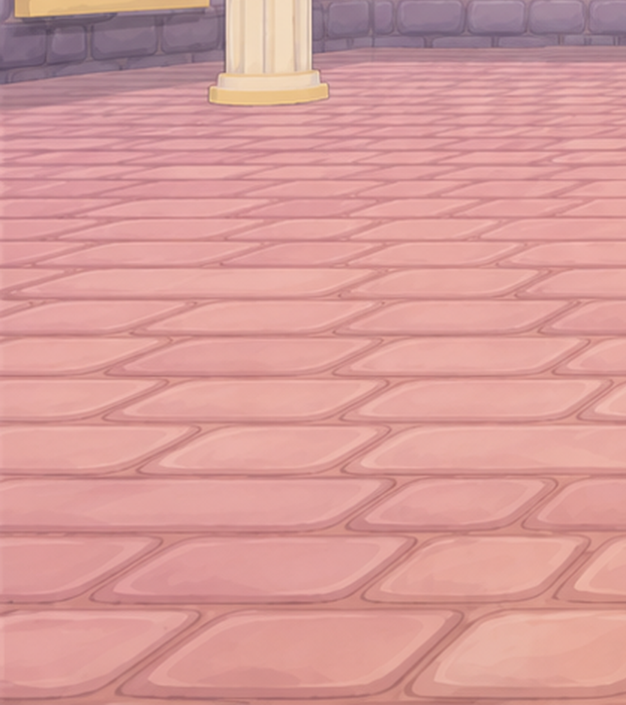
The pink floor is dominated by many repeated outlined paving shapes; its fine pattern is stronger and busier than the quiet broad-painted floor language.
Refinement: Review actual actor/prop contrast; if repair is needed, soften only floor detail on the joined master while preserving architecture and contact planes.
assets/flats/castle/interactions_v4/background_tiles/room_playroom_background_r1_c0.png · 910×1024Exact source hash and aliases
e5d5044e76a9f542ad27229baa135862e4daf86b628b50bdee3a81eb85b4bca7D2X-0078, D1V2-0159
D2X-0079 · 4.3/5
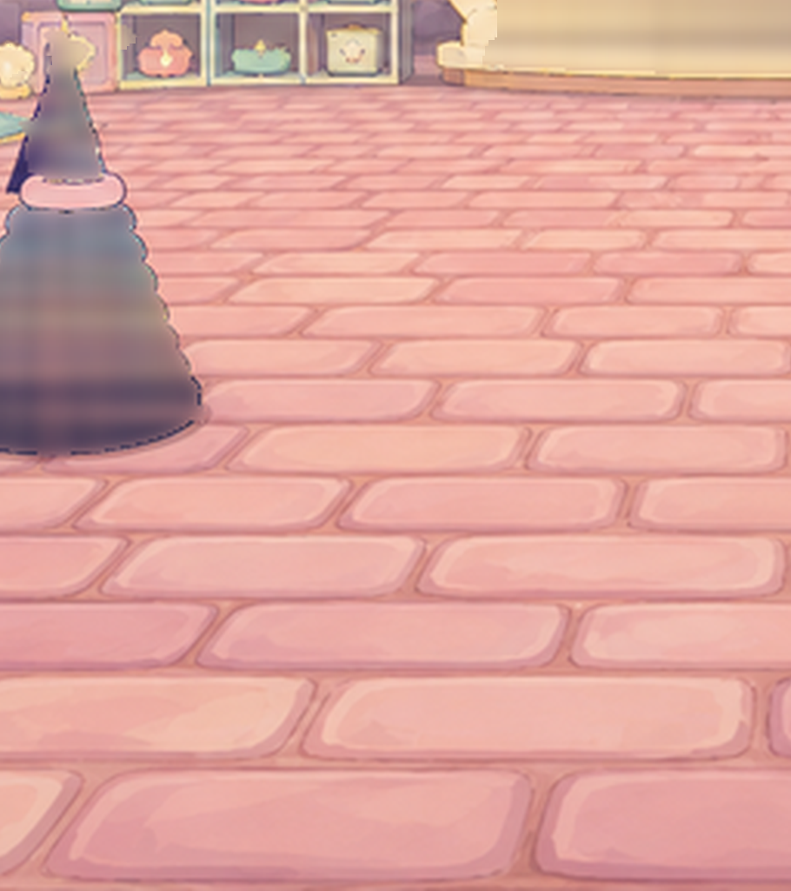
The pink floor is dominated by many repeated outlined paving shapes; its fine pattern is stronger and busier than the quiet broad-painted floor language.
Refinement: Review actual actor/prop contrast; if repair is needed, soften only floor detail on the joined master while preserving architecture and contact planes.
assets/flats/castle/interactions_v4/background_tiles/room_playroom_background_r1_c1.png · 910×1024Exact source hash and aliases
b03d79f00f8bf9848e8d42edfc6a6fbfa37e1ac6e8cebb0df5653c8611661f2aD2X-0079, D1V2-0160
D2X-0080 · 4.3/5

The pink floor is dominated by many repeated outlined paving shapes; its fine pattern is stronger and busier than the quiet broad-painted floor language.
Refinement: Review actual actor/prop contrast; if repair is needed, soften only floor detail on the joined master while preserving architecture and contact planes.
assets/flats/castle/interactions_v4/background_tiles/room_playroom_background_r1_c2.png · 910×1024Exact source hash and aliases
b971fbb842904377f5fdd3e91ea48284ba4ec563497d77656719e9e963e5ecddD2X-0080, D1V2-0161
D2X-0081 · 4.3/5
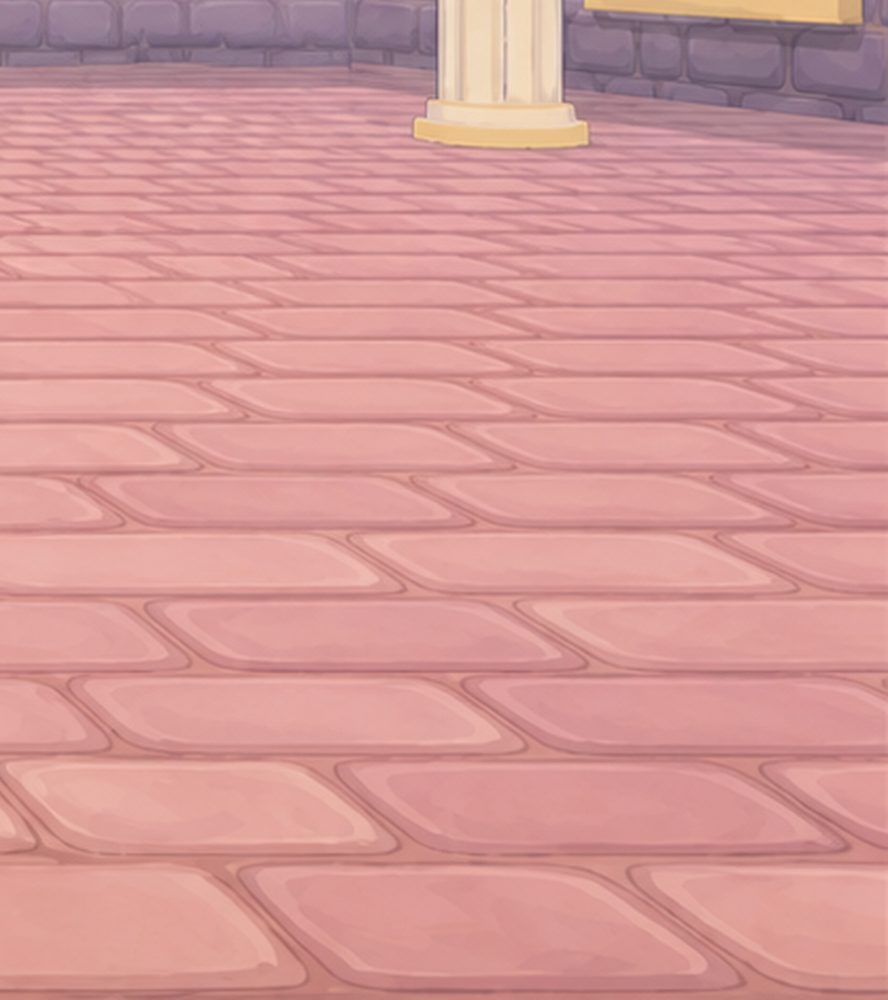
The pink floor is dominated by many repeated outlined paving shapes; its fine pattern is stronger and busier than the quiet broad-painted floor language.
Refinement: Review actual actor/prop contrast; if repair is needed, soften only floor detail on the joined master while preserving architecture and contact planes.
assets/flats/castle/interactions_v4/background_tiles/room_playroom_background_r1_c3.png · 910×1024Exact source hash and aliases
eb67c27e7d4dc2d0d304390cf83b58aa1be2347c4e466beb35eadd27ae82240fD2X-0081, D1V2-0162
D2X-0109 · 4.6/5
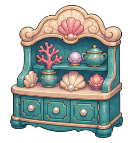
The teal hutch has rounded cream/gold framing, broad painted cabinet bands and recognizable shell/coral props. It matches the stronger existing toy-playset family.
Refinement: Reuse this source; evaluate its actual mounted hierarchy and card ownership separately.
assets/flats/castle/dream_house/provisions_hutch.png · 275×291Exact source hash and aliases
e57e6ba4bd1ce334deb09d092d1af36df86d31e260fbca60cd5b034c785402d3D2X-0109, D1V2-0098
D2X-0110 · 4.5/5
The stool has a clear round aqua cushion and stable chunky feet, with a readable shell/gold motif. Fine surface lines and dark foot shadows are modest polish priorities.
Refinement: Reuse; check actual child/actor scale and contact without changing the approved furniture design.
assets/flats/castle/dream_house/dining_seat.png · 179×165Exact source hash and aliases
201d31b8b7f8e9d3fab9d1c260d5c1f6b106238d90d1da0e04d16b06bb201be1D2X-0110, D1V2-0087
D2X-0111 · 4.6/5
The shell chandelier has broad warm painted bands, a clear gold rim and coherent chain. It is materially stronger than the thin Library chandelier sheet.
Refinement: Prefer this existing painted material reference where identity fits; no automatic substitution of a different lamp.
assets/flats/castle/dream_house/shell_chandelier.png · 208×245Exact source hash and aliases
b5b8cbb8a2ce99df7a82ad6e5b6f5679656385ffd8a93a01d244a0fcc67e3f18D2X-0111, D1V2-0099
D2X-0112 · 2.8/5
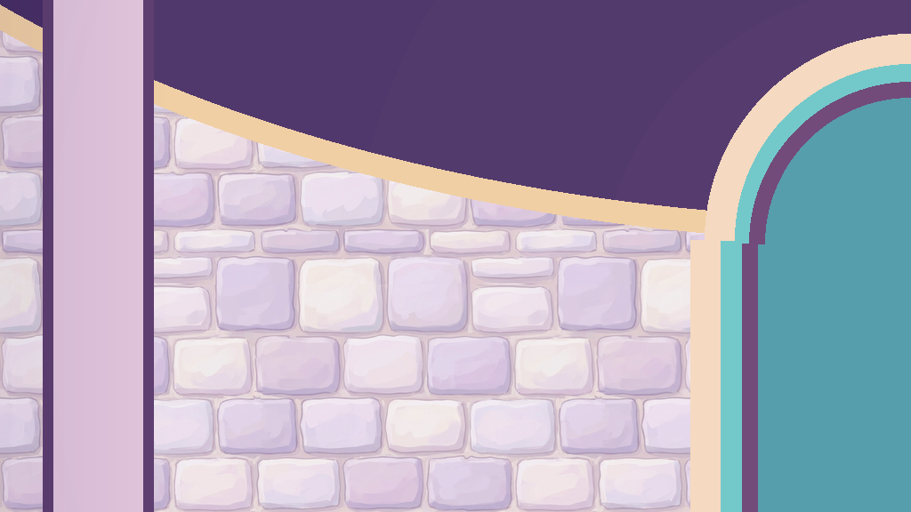
Flat uniform ceiling/column/window bands and hard geometry are mixed with a stamped stone texture.
Refinement: Priority: rebuild the same room architecture/material in ImageGen, preserve layout/door/column facts and continuous master joins; verify native per-screen coverage and actual furniture/actor hierarchy separately.
assets/flats/castle/rooms/background_tiles/room_dining_room_background_r0_c0.png · 1024×576Exact source hash and aliases
343c8be0f2bb5569f26abe61770bc5109f4a83c8db6a7e6c6fcbb86ed8077c0bD2X-0112, D1V2-0225
D2X-0113 · 2.8/5
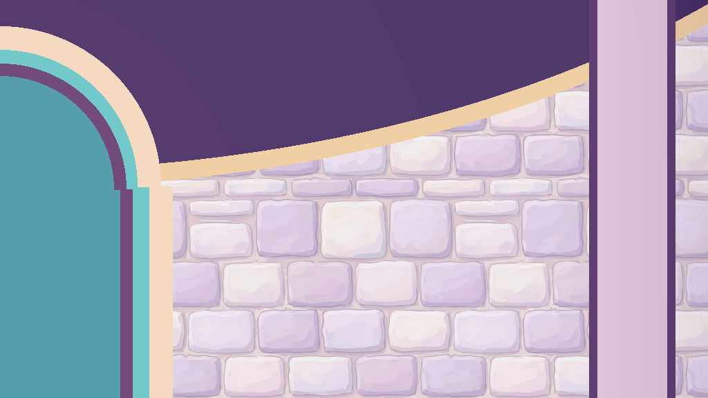
Flat uniform ceiling/column/window bands and hard geometry are mixed with a stamped stone texture.
Refinement: Priority: rebuild the same room architecture/material in ImageGen, preserve layout/door/column facts and continuous master joins; verify native per-screen coverage and actual furniture/actor hierarchy separately.
assets/flats/castle/rooms/background_tiles/room_dining_room_background_r0_c1.png · 1024×576Exact source hash and aliases
4cf884ac1c002ba692b6595471c35073db54b41147f0ad90f3d75dea558d5fe1D2X-0113, D1V2-0226
D2X-0114 · 2.5/5
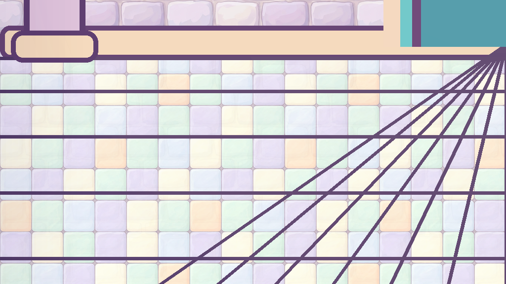
Oversized dark perspective-grid lines cross small differently aligned floor squares. The grid dominates the surface and breaks the painted toy material language.
Refinement: Priority: rebuild the same room architecture/material in ImageGen, preserve layout/door/column facts and continuous master joins; verify native per-screen coverage and actual furniture/actor hierarchy separately.
assets/flats/castle/rooms/background_tiles/room_dining_room_background_r1_c0.png · 1024×576Exact source hash and aliases
5dd1d11d069e39a371bb599837b07f2dfdb789584432289a1f4c40e0ce2d81dfD2X-0114, D1V2-0227
D2X-0115 · 2.5/5
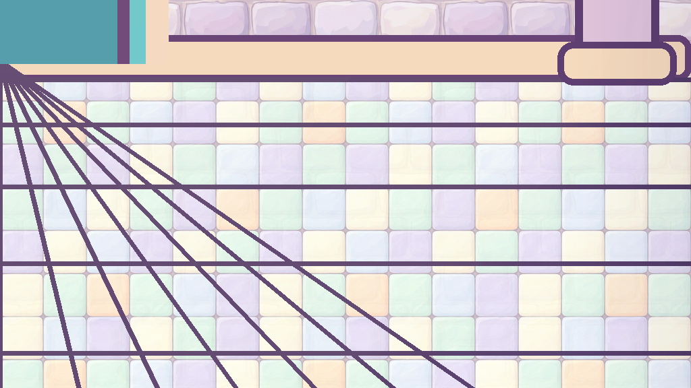
Oversized dark perspective-grid lines cross small differently aligned floor squares. The grid dominates the surface and breaks the painted toy material language.
Refinement: Priority: rebuild the same room architecture/material in ImageGen, preserve layout/door/column facts and continuous master joins; verify native per-screen coverage and actual furniture/actor hierarchy separately.
assets/flats/castle/rooms/background_tiles/room_dining_room_background_r1_c1.png · 1024×576Exact source hash and aliases
624c1c7405b86c6a849cd384d1048f5c709a317911e64c46ab64b0021b6ce629D2X-0115, D1V2-0228
D2X-0117 · 4.6/5
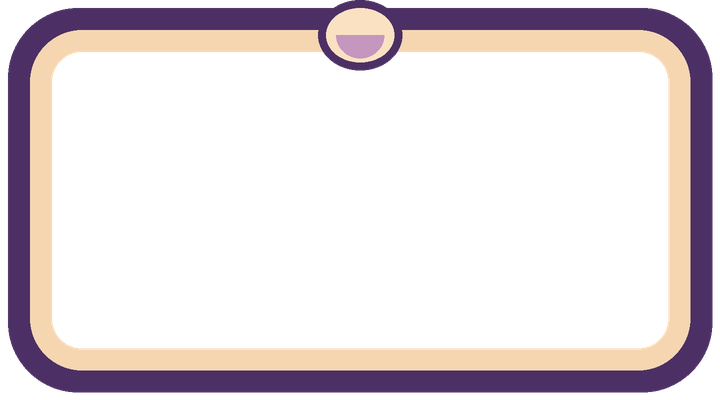
The movie frame has a rounded purple/gold silhouette, broad painted relief and a quiet navy content opening. Small shell motifs remain subordinate.
Refinement: Reuse, checking the exact live video opening, aspect and touch/occlusion separately.
assets/flats/castle/dream_house/movie_screen_frame.png · 313×264Exact source hash and aliases
091304e6b1e053b12d5774e76a710852680253e0b597089c05cb11f5c038ec4eD2X-0117, D1V2-0097
D2X-0118 · 4.6/5
The cloud settee has large friendly cloud masses, a simple rainbow and broad teal cushions. Painted values and contour hierarchy fit the game family.
Refinement: Reuse the approved settee; audit actual occlusion and figures seated on it separately.
assets/flats/castle/dream_house/cloud_settee.png · 302×238Exact source hash and aliases
e5c8f082bbb42c396f6fba3128596e8d3873e7768b649fc1e6e4ca40f24b3eedD2X-0118, D1V2-0086
D2X-0119 · 4.6/5

The pouf is a broad rounded aqua/purple toy form with restrained warm bead accents and clear painted cushion divisions.
Refinement: Reuse exactly; verify current contact/scale and keep it a single owned card.
assets/flats/castle/dream_house/cloud_pouf.png · 221×170Exact source hash and aliases
97396cb1d90c5633b65034bce658e005cf1036c68c6c57717808e4526fce386aD2X-0119, D1V2-0085
D2X-0120 · 4.5/5
The pink bowl has a clear scalloped silhouette and warm corn. Numerous small kernels and repeated highlights are a minor density concern at small sizes.
Refinement: Reuse first, then inspect the actual mounted bowl at child-readable scale before simplifying any corn.
assets/flats/castle/dream_house/shell_popcorn_bowl.png · 200×204Exact source hash and aliases
60f84350763fdb2a5bbcbd8768d86c311101363b6317ef0b0088cef3e4653825D2X-0120, D1V2-0100
D2X-0121 · 2.7/5
The flat ceiling/columns sit against a repetitive stone texture, with little shared painted material across the components.
Refinement: Priority: rebuild the same room with broad painted materials and a quiet consistent floor, preserving layout/content opening and continuous master joins; audit furniture/actor composition and native coverage before binding.
assets/flats/castle/rooms/background_tiles/room_movie_lounge_background_r0_c0.png · 1024×576Exact source hash and aliases
20622c31be27dedf1373db27b8b18082858f791158d5067b20d5417cd6f4973bD2X-0121, D1V2-0261
D2X-0122 · 2.7/5
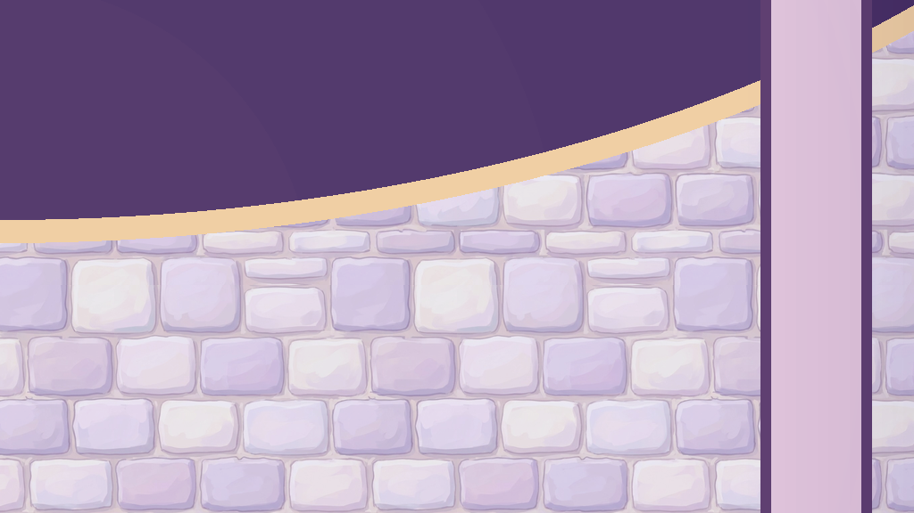
The flat ceiling/columns sit against a repetitive stone texture, with little shared painted material across the components.
Refinement: Priority: rebuild the same room with broad painted materials and a quiet consistent floor, preserving layout/content opening and continuous master joins; audit furniture/actor composition and native coverage before binding.
assets/flats/castle/rooms/background_tiles/room_movie_lounge_background_r0_c1.png · 1024×576Exact source hash and aliases
b79751daee585909b4b0a516e76c712e28c39bbd01c91b0c8f4c925bf4a3ecb4D2X-0122, D1V2-0262
D2X-0123 · 2.4/5
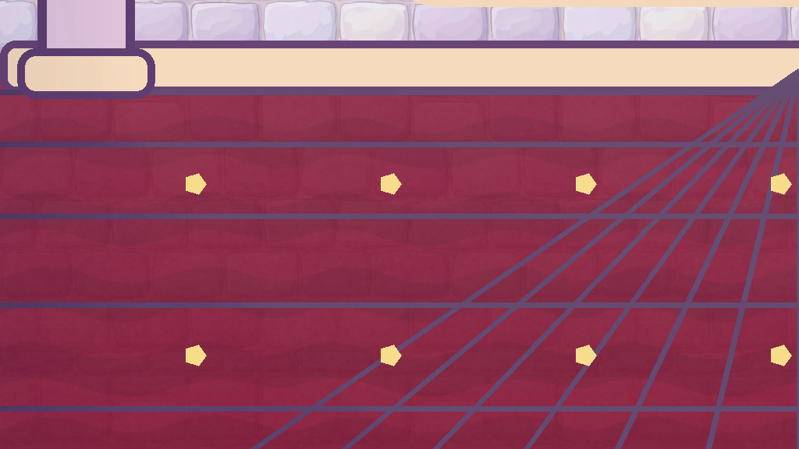
A rigid dark perspective grid overlays a saturated red patterned floor and small isolated yellow polygons. It conflicts with the much stronger painted movie furniture.
Refinement: Priority: rebuild the same room with broad painted materials and a quiet consistent floor, preserving layout/content opening and continuous master joins; audit furniture/actor composition and native coverage before binding.
assets/flats/castle/rooms/background_tiles/room_movie_lounge_background_r1_c0.png · 1024×576Exact source hash and aliases
2b35ce0f8171643b855b416d71f23d7075eca1028c1e05acdbe4770b544d5f66D2X-0123, D1V2-0263
D2X-0124 · 2.4/5
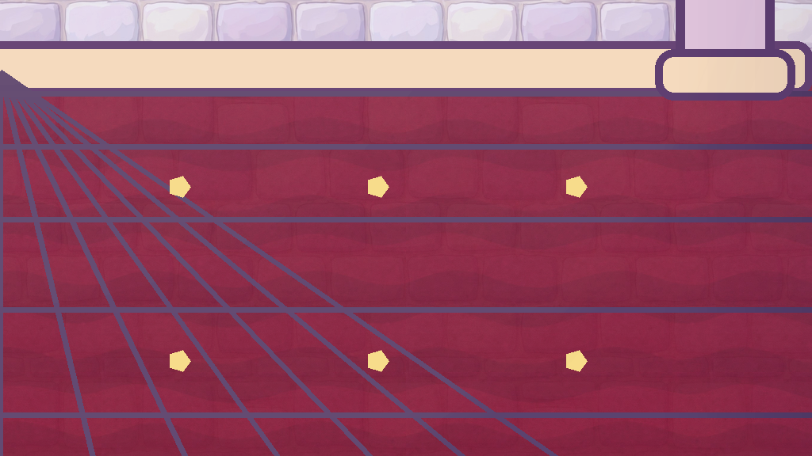
A rigid dark perspective grid overlays a saturated red patterned floor and small isolated yellow polygons. It conflicts with the much stronger painted movie furniture.
Refinement: Priority: rebuild the same room with broad painted materials and a quiet consistent floor, preserving layout/content opening and continuous master joins; audit furniture/actor composition and native coverage before binding.
assets/flats/castle/rooms/background_tiles/room_movie_lounge_background_r1_c1.png · 1024×576Exact source hash and aliases
381c0ad1c7bbc6829018507c269e8e9fe151bd149e340398e22343c6ea4491bdD2X-0124, D1V2-0264
D2X-0125 · 4.5/5
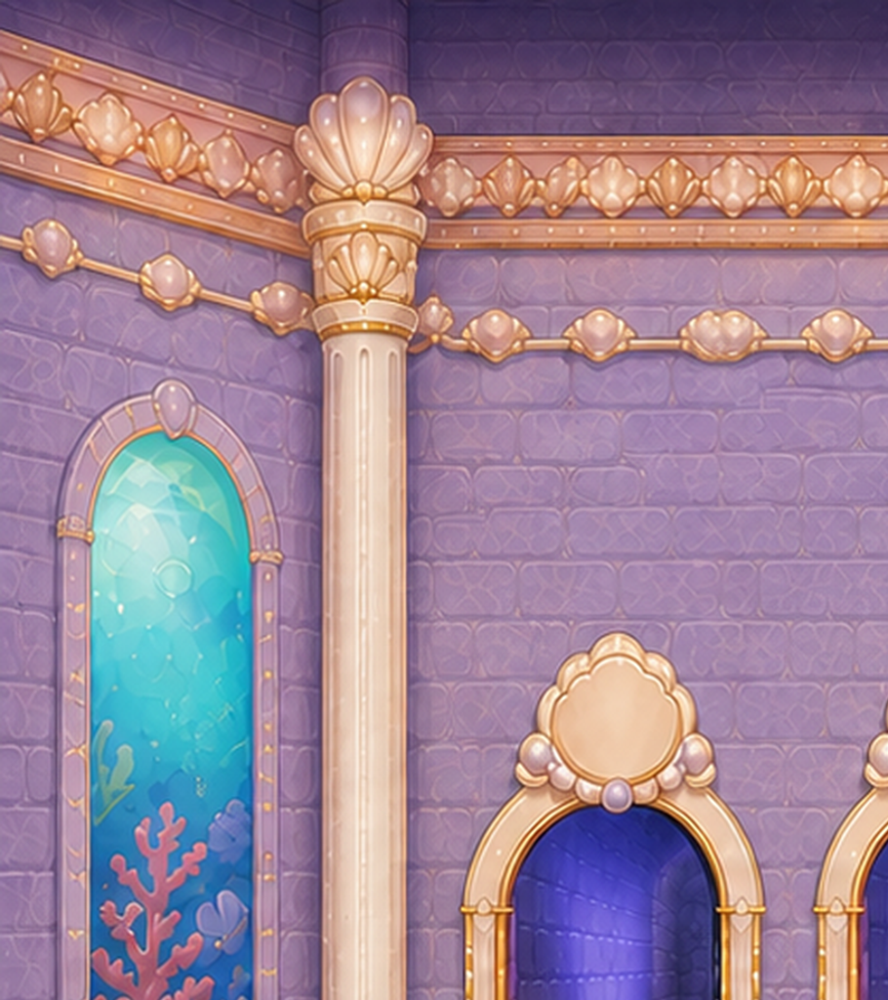
The hall architecture has coherent painted shells, cream columns and a blue window. Repeated pearl/brick details and highlights are much finer than major toy shapes.
Refinement: Preserve the accepted joined hall; inspect invitation/actor contrast at runtime rather than redesigning the scene.
assets/flats/castle/main_hall_redraw_2026-08-03/tiles/main_hall_room_led_r0_c0.png · 910×1024Exact source hash and aliases
317cdef9249c73bae64d8b0e7c6590a78b5a4f71d3187a2c32e5fa435150c1cbD2X-0125, D1V2-0185
D2X-0126 · 4.5/5
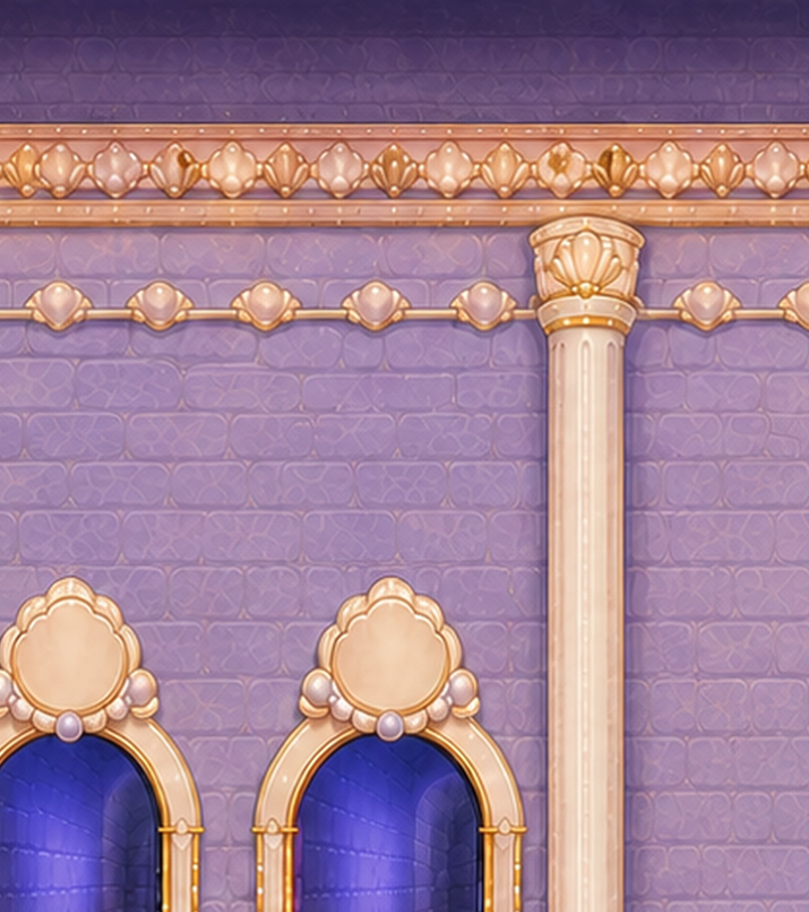
The cream column, gold doors and lavender wall retain the hall identity. The repeated small shell/brick pattern is visually busy in the native crop.
Refinement: Reuse approved architecture; reduce detail only for a demonstrated mounted hierarchy failure.
assets/flats/castle/main_hall_redraw_2026-08-03/tiles/main_hall_room_led_r0_c1.png · 910×1024Exact source hash and aliases
2584ed2636652871e5a7eeb3400243a61a2676cf966b9e9f652463f424467e22D2X-0126, D1V2-0186
D2X-0130 · 4.3/5
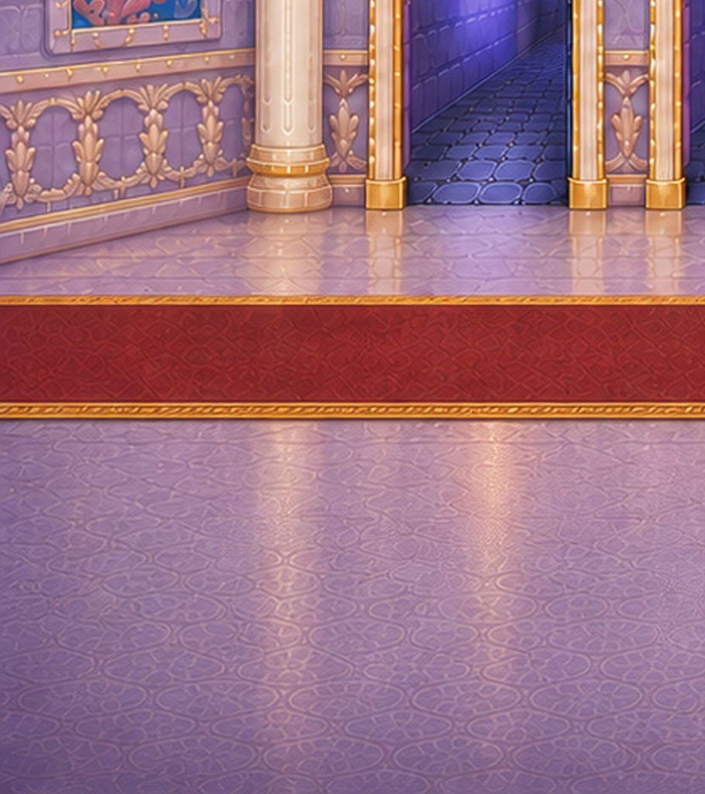
The floor carries dense woven/pearl patterning and sharp glossy reflections beneath a strong red runner. It approaches realistic material detail rather than broad painted bands.
Refinement: Priority review: soften fine reflection/texture emphasis on the complete approved master if actual actor readability confirms the gap; never regenerate separate cross-tile architecture.
assets/flats/castle/main_hall_redraw_2026-08-03/tiles/main_hall_room_led_r1_c0.png · 910×1024Exact source hash and aliases
d1e3eab5aa9ce34c9b136343c03709b707e775883177c51244fe1b1dc56d74ecD2X-0130, D1V2-0193
D2X-0131 · 4.3/5
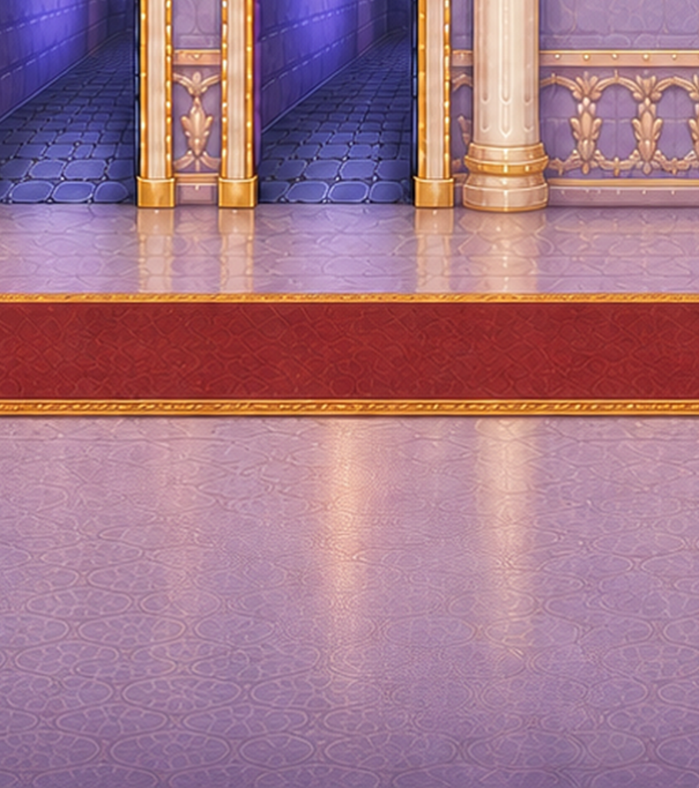
The sibling floor repeats dense patterning and many narrow column reflections; the red carpet adds another detailed band. Major doorway shapes stay coherent.
Refinement: Assess mounted figure contrast and preserve all hall/door geometry. Any local material repair must retain the joined master identity.
assets/flats/castle/main_hall_redraw_2026-08-03/tiles/main_hall_room_led_r1_c1.png · 910×1024Exact source hash and aliases
e775495278b8fbcadca429dececa5445fe6dc5d8327f9758966ac4a5ae615129D2X-0131, D1V2-0194
D2X-0137 · 4.5/5
The house sign is friendly and materially coherent, with a clear roof/window and shell frame. Small pearl details can blur at its actual doorway size.
Refinement: Reuse; inspect at the actual sign size with the non-reading route cue.
assets/flats/castle/main_hall_redraw_2026-08-03/signs/sign_family_gallery.png · 256×256Exact source hash and aliases
222d5a5a4c590b6ae951ff5d7f4431bd35ed539e48cf0346a2e31fd83a09a0ddD2X-0137, D1V2-0179
D2X-0139 · 4.6/5
The open book has a clear center fold and strong golden/plum framing. It remains recognizable without text and fits the existing route emblem family.
Refinement: Reuse the exact icon, then verify actual mounted contrast/size and voice/pointer correspondence.
assets/flats/castle/main_hall_redraw_2026-08-03/signs/sign_library.png · 256×256Exact source hash and aliases
7aa633b17cd655f5bf340636555fab1406fc86030e9de38e667f9e701dd764b0D2X-0139, D1V2-0181